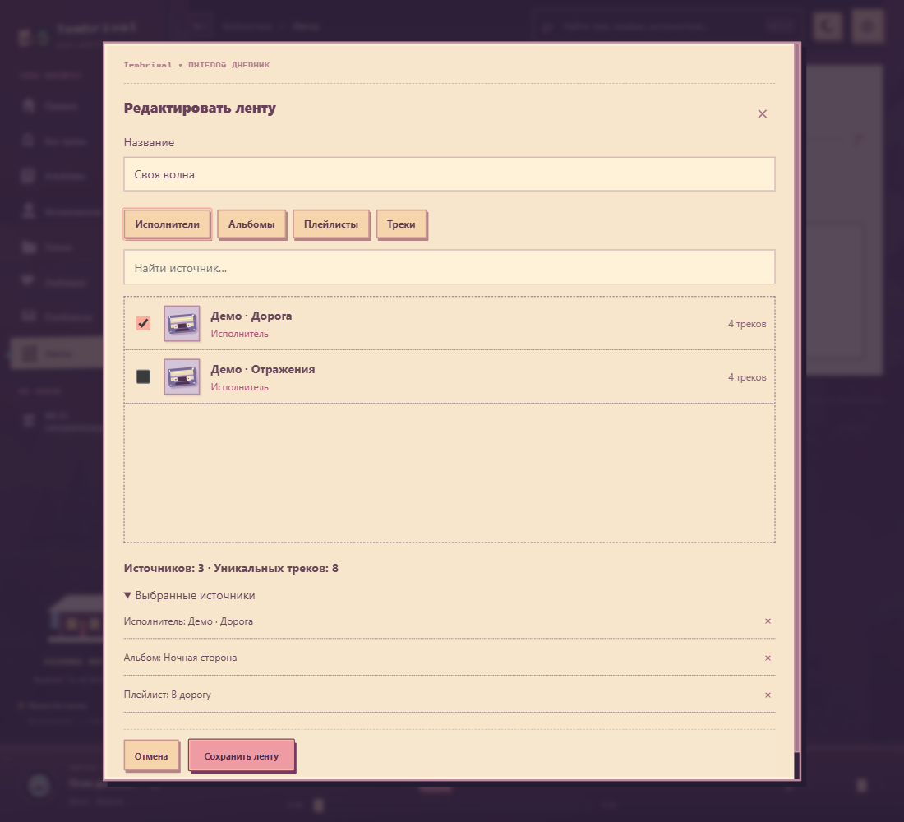
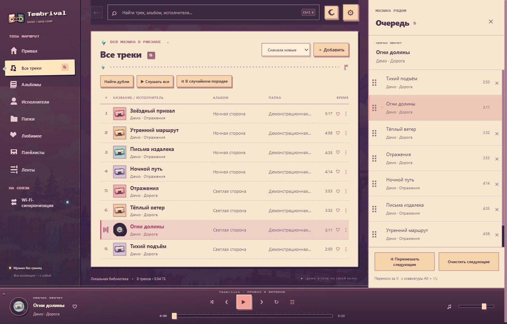
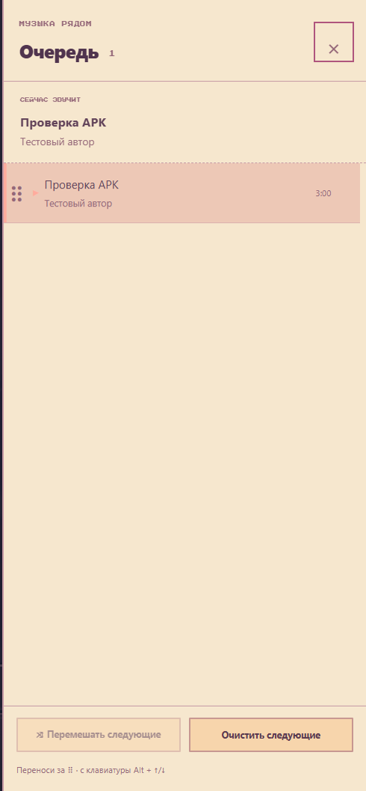
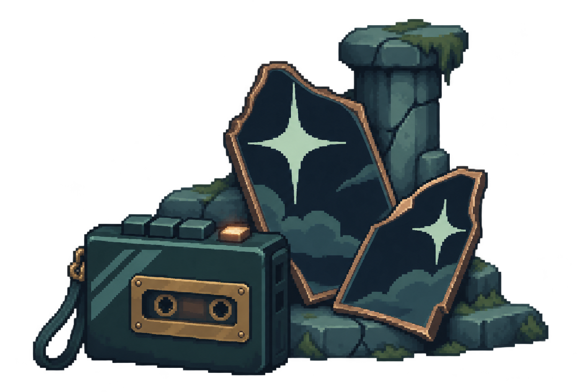

Твои файлы и подборки
Папки, альбомы, исполнители, обложки, плейлисты и избранное в одной библиотеке.
WINDOWS + ANDROID / БЕЗ РЕГИСТРАЦИИ
Смешивай любимые альбомы, исполнителей и плейлисты.
Слушай без интернета. Передавай музыку между своими устройствами.
01 / ТВОЯ ЛЕНТА, ТВОИ ПРАВИЛА
Выбери исполнителей, альбомы, плейлисты и отдельные песни в любом сочетании. Tembrival соберёт их вместе, уберёт пересечения и перемешает. Интернет и аккаунт для этого не нужны.
ИНТЕРАКТИВНАЯ СХЕМА · БЕЗ ВОСПРОИЗВЕДЕНИЯ
Пересечения источников убраны.
Дай ленте имя. При следующем запуске она снова соберётся из актуального содержимого выбранных источников — уже в другом порядке.
Если одна песня есть и в альбоме, и в плейлисте, она попадёт в ленту один раз. Разные версии записи автоматически не склеиваются.
Переноси песни за ручку, убирай лишние строки или включай нужную сейчас. На ПК очередь можно держать рядом с библиотекой.
Составы лент пока сохраняются отдельно на каждом устройстве. Синхронизация плейлистов и избранного работает между ПК и телефоном.

02 / ДВА УСТРОЙСТВА, СВОЯ БИБЛИОТЕКА
Обе версии работают самостоятельно.
Вместе — передают музыку по локальной сети.


Интерфейсы 0.21.1 с демонстрационной библиотекой. Android-интерфейс показан из ресурсов APK в тестовой среде.
Папки, альбомы, исполнители, обложки, плейлисты и избранное в одной библиотеке.
Добавляй музыку и слушай сразу. Аккаунт, подписка и постоянное соединение с интернетом не требуются.
Приложение сохраняет очередь и позицию трека. Громкость и настройки движения остаются на устройстве.
03 / ПЕРЕДАЧА БЕЗ ОБЛАКА
Передавай музыку и синхронизируй плейлисты и избранное. Достаточно общей Wi-Fi-сети или точки доступа телефона — доступ в интернет не нужен.
ПК и приложение должны работать во время передачи. После копирования слушай музыку независимо.
Домашний Wi-Fi подойдёт. Без роутера включи точку доступа на телефоне и подключи к ней ПК.
На ПК открой Wi-Fi-синхронизацию → «Подключить телефон». Сканируй QR камерой телефона. При ручном вводе адреса и кода сравни удостоверения на обоих экранах.
Скопируй нужные треки. При следующем подключении используй знакомый ПК — новое сопряжение каждый раз не требуется.
Приложение умеет повторно находить знакомый ПК и возобновлять передачу после обрыва. Оба устройства должны снова оказаться в доступной друг другу локальной сети.
Разреши локальную сеть в настройках VPN и Tembrival в брандмауэре Windows для доверенной частной сети. Некоторые Wi-Fi-сети изолируют устройства друг от друга — тогда используй собственную точку доступа. Приложение не отключает защиту и не меняет маршруты автоматически.
04 / ПОНЯТНО, ЧТО ПРОИСХОДИТ
Сопряжение связывает телефон с конкретным компьютером. После него передача использует TLS с проверкой ключа ПК.
На ПК есть список знакомых устройств. Для потерянного или ненужного телефона можно отключить доступ.
Нет аккаунтов, аналитики приложения и облачного хранения библиотеки. Подробности — в политике приватности.
05 / ОФОРМЛЕНИЕ СО СВОИМ ХАРАКТЕРОМ
ДЕНЬ / ИССЛЕДОВАНИЯ
Дневная тема сочетает бумажные оттенки, малиновые акценты и пиксельные детали. Оформление остаётся своим — от библиотеки до очереди.
Side A · Tembrival

06 / УСТАНОВКА БЕЗ РЕГИСТРАЦИИ
Бесплатный плеер для своей музыки. Версии можно использовать отдельно.
Доступна версия 0.21.2. Файлы скачиваются из официального репозитория NamelessHat/Tembrival на GitHub. Публичные сборки не содержат интернет-загрузчик.
ДОМА / WINDOWS
Библиотека, свои ленты
и передача музыки на телефон.
Закрой прежний плеер и запусти новую версию из распакованной папки. Библиотека остаётся в прежнем профиле. Не переноси один EXE без соседних файлов. Сборка пока не имеет подписи Authenticode; не отключай антивирус ради установки.
В ПУТИ / ANDROID
Локальная музыка и ленты,
даже когда нет интернета.
Установи APK поверх текущего приложения, без удаления и очистки данных. Музыка, плейлисты и настройки сохранятся. Android может попросить разрешение на установку из браузера. Далее обновления можно получать с ПК; на компьютере должна работать новая версия.
Публичная версия воспроизводит свои файлы и не содержит загрузчика музыки из интернета. Используй записи и обложки, на которые у тебя есть необходимые права.
Первая локальная страница установки APK на ПК работает по HTTP и предназначена для доверенной сети. После сопряжения передача использует TLS. Это отдельный механизм от публичного HTTPS-сайта.
Windows-версия использует FFmpeg под GNU LGPL 2.1 или более поздней. Соответствующие исходники, патч и инструкции также включены в Windows-комплект.
Контрольные суммы SHA-256 · Страница выпуска · Условия использования · Условия исходников · Инструкция
ОБРАТНАЯ СВЯЗЬ
Напиши версию приложения, устройство и что произошло.
Разработчик — NamelessHat.
NotHappyWolf@yandex.ru
Приложение бесплатно. Способ добровольной поддержки пока выбирается.